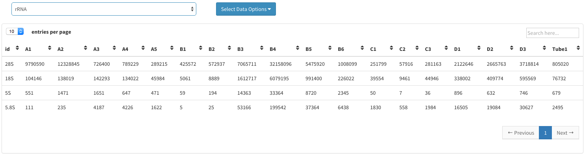
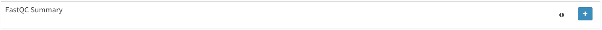

NGS Reports Guide¶
This guide will walk you through all of your options within the Reports page.
Getting Started¶
First, make sure to have an instance of dolphin available (see Dolphin Docker) as well as an account for the dolphin interface.
Once logged in, click on the ‘NGS Tracking’ tab on the left, then click on ‘Run Status’.

After navigating to the status page, the next step is to make sure the run whose results you are interested in has completed without errors.
Once you have a completed run, you can select the options button on the far right and select the ‘Report Details’ option.

Selecting this option will bring you to the Report Details page.
Report Details¶
Upon reaching the Report Details page, the user is greeted with an Initial Mapping Results table.

This table displays various information about the samples you’ve selected for your run and based on the common RNAs that you may have selected to map for, the table will also display the number of reads mapped for each selected.
It’s important to note that the reads mapped to RNA are not selected for mapping within the other RNA steps.
If you have indeed selected to map their reads against a specific RNA, the dropdown under the table will also produce additional information in regards to the RNA selected from the dropdown list.
Once the table is populated, an options button labeled ‘Select Data Options’ will appear and selecting it will give you a variety of options to choose from.

Options include:
- TYPE Links: These links will direct the user towards another webpage with the data from the table in the specified TYPE format.
- Send to DEBrowser: This link will only appear under rsem/mRNA/tRNA results. It will send the user to the DEBrowser with the selected table as the dataset (For more information on DEBrowser, see the DEBrowser section).
- Download File: This link will download the table to a file in a TSV format.
- Clear Selection: If the user desires, they can clear the table of it’s contents.
Following the Initial Mapping Results there may be additional minimized sections. These sections are available to the user based on the parameters set by the user.
These tabs include:
- FastQC Summary
- Detailed FastQC Results
- RSEM Results
- DESEQ Results
- Picard Metrics
- RSeQC Metrics
Expanding any of the FastQC tabs will provide a list of links related to either the FastQC summary or the specific sample FastQC results. Clicking one of these links will re-direct you to another page with the specified results.
By expanding the RSEM, DESEQ, Picard Metrics, or RSeQC tabs, you will be greeted with another dropdown menu like that within the Initial Mapping Results tab.
The list provided within the dropdown menu will contain files related to the tab which is expanded.
If you select a TSV file, a table will be populated with the results and another options button will appear to the right of the dropdown list with the same options of that within the Initial Mapping Results table.
Selecting a PDF file will not populate a table, nor will it replace a previously populated table that you have already selected. Instead, selecting a PDF file will change the options available to the user within the ‘Select Data Options’ button to either ‘Download File’ or ‘Clear Selection’ Selecting the ‘Download File’ option will redirect you to a new page containing the PDF with the ability to download.

At the very bottom of the page, you have 2 additional buttons.
The ‘Return to Status’ button will re-direct you to the status page and the ‘Go To Plots’ button will re-direct you to the plots page.
For more information on the Status page, consult the ‘NGS Status Guide’.
For more information on the Plots page, consult the ‘NGS Plots Guide’.